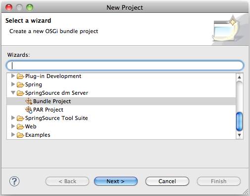

There are two New Project Wizards available within Eclipse that allow for creating new OSGi bundle and PAR projects. The projects created by the wizards are deployable to the integrated dm Server instance without requiring any additional steps.

Those wizards create the required MANIFEST.MF file and appropriate manifest
headers. The New PAR Project wizard also creates a file called par.xml in
the root of the PAR project that allows users to manage the bundles contained in the
PAR.
![[Note]](../images/information.gif) | Note |
|---|---|
The par.xml file is only required for tooling to keep track of the
depending projects. It is not required by the dm Server at runtime.
|